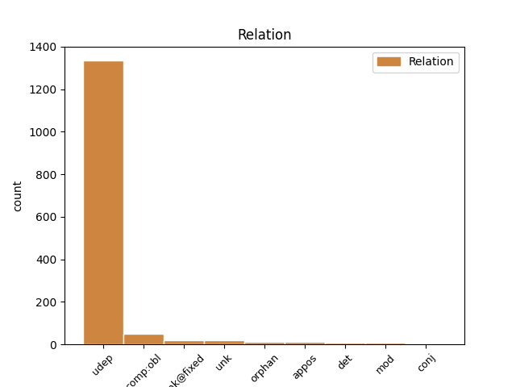
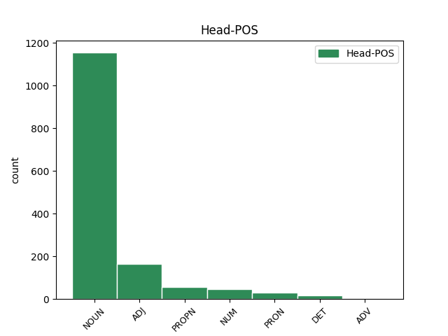
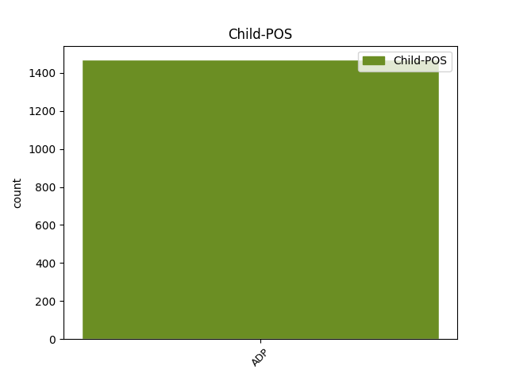

Distribution of features within this leaf



Agreement Rules sorted by frequency.
When the head token is NOUN and the dependent token is ADP.
1 Šetrí _ _ _ _ 0 _ _ _
2 aj _ _ _ _ 0 _ _ _
3 pani _ _ _ _ 0 _ _ _
4 ministerka _ _ _ _ 0 _ _ _
5 financií _ _ _ _ 0 _ _ _
6 , _ _ _ _ 0 _ _ _
7 ktorá _ _ _ _ 0 _ _ _
8 stále _ _ _ _ 0 _ _ _
9 nevylučuje _ _ _ _ 0 _ _ _
10 ďalšie _ _ _ _ 0 _ _ _
11 zvyšovania _ _ _ _ 0 _ _ _
12 cien _ _ _ _ 0 _ _ _
13 a _ _ _ _ 0 _ _ _
14 zodpovednosť zodpovednosť NOUN SSfs4 Case=Acc|Gender=Fem|Number=Sing 0 _ _ _
15 za za ADP Eu4 AdpType=Prep|Case=Acc 14 det _ _
16 to _ _ _ _ 0 _ _ _
17 prenechala _ _ _ _ 0 _ _ _
18 na _ _ _ _ 0 _ _ _
19 vedúcich _ _ _ _ 0 _ _ _
20 úsekov _ _ _ _ 0 _ _ _
21 ? _ _ _ _ 0 _ _ _
When the head token is ADJ and the dependent token is ADP.
1 Prebúdzal _ _ _ _ 0 _ _ _
2 som _ _ _ _ 0 _ _ _
3 sa _ _ _ _ 0 _ _ _
4 o _ _ _ _ 0 _ _ _
5 druhej druhý ADJ NAfs6 Case=Loc|Gender=Fem|Number=Sing|NumType=Ord 0 _ _ _
6 v v ADP Eu6 AdpType=Prep|Case=Loc 5 udep _ _
7 noci _ _ _ _ 0 _ _ _
8 na _ _ _ _ 0 _ _ _
9 zvonenie _ _ _ _ 0 _ _ _
10 mechanického _ _ _ _ 0 _ _ _
11 budíka _ _ _ _ 0 _ _ _
12 čínskej _ _ _ _ 0 _ _ _
13 výroby _ _ _ _ 0 _ _ _
14 , _ _ _ _ 0 _ _ _
15 ktorý _ _ _ _ 0 _ _ _
16 som _ _ _ _ 0 _ _ _
17 mal _ _ _ _ 0 _ _ _
18 na _ _ _ _ 0 _ _ _
19 nočnom _ _ _ _ 0 _ _ _
20 stolíku _ _ _ _ 0 _ _ _
21 pri _ _ _ _ 0 _ _ _
22 záhlaví _ _ _ _ 0 _ _ _
23 postele _ _ _ _ 0 _ _ _
24 . _ _ _ _ 0 _ _ _
When the head token is NUM and the dependent token is ADP.
1 Oslík _ _ _ _ 0 _ _ _
2 zahol _ _ _ _ 0 _ _ _
3 do _ _ _ _ 0 _ _ _
4 jednej jeden NUM NFfs2 Case=Gen|Gender=Fem|Number=Sing 0 _ _ _
5 z z ADP Eu2 AdpType=Prep|Case=Gen 4 udep _ _
6 ulíc _ _ _ _ 0 _ _ _
7 . _ _ _ _ 0 _ _ _
When the head token is DET and the dependent token is ADP.
1 Niekedy _ _ _ _ 0 _ _ _
2 sa _ _ _ _ 0 _ _ _
3 objavovali _ _ _ _ 0 _ _ _
4 obyvatelia _ _ _ _ 0 _ _ _
5 Čarodejníckej _ _ _ _ 0 _ _ _
6 vily _ _ _ _ 0 _ _ _
7 , _ _ _ _ 0 _ _ _
8 všetkých _ _ _ _ 0 _ _ _
9 som _ _ _ _ 0 _ _ _
10 poznala _ _ _ _ 0 _ _ _
11 a _ _ _ _ 0 _ _ _
12 vedela _ _ _ _ 0 _ _ _
13 som _ _ _ _ 0 _ _ _
14 , _ _ _ _ 0 _ _ _
15 aký _ _ _ _ 0 _ _ _
16 bol _ _ _ _ 0 _ _ _
17 osud _ _ _ _ 0 _ _ _
18 každého každý DET PAms2 Animacy=Anim|Case=Gen|Gender=Masc|Number=Sing|PronType=Tot 0 _ _ _
19 z z ADP Eu2 AdpType=Prep|Case=Gen 18 udep _ _
20 nich _ _ _ _ 0 _ _ _
21 . _ _ _ _ 0 _ _ _
When the head token is PRON and the dependent token is ADP.
1 Niečo niečo PRON PFns4 Case=Acc|Gender=Neut|Number=Sing|PronType=Ind 0 _ _ _
2 pre pre ADP Eu4 AdpType=Prep|Case=Acc 1 udep _ _
3 dievčinu _ _ _ _ 0 _ _ _
4 , _ _ _ _ 0 _ _ _
5 ktorá _ _ _ _ 0 _ _ _
6 má _ _ _ _ 0 _ _ _
7 všetko _ _ _ _ 0 _ _ _
8 . _ _ _ _ 0 _ _ _
9 “ _ _ _ _ 0 _ _ _
When the head token is PROPN and the dependent token is ADP.
1 Samo _ _ _ _ 0 _ _ _
2 Gorze _ _ _ _ 0 _ _ _
3 sa _ _ _ _ 0 _ _ _
4 na _ _ _ _ 0 _ _ _
5 začiatku _ _ _ _ 0 _ _ _
6 11 _ _ _ _ 0 _ _ _
7 . _ _ _ _ 0 _ _ _
8 storočia _ _ _ _ 0 _ _ _
9 dostalo _ _ _ _ 0 _ _ _
10 vďaka _ _ _ _ 0 _ _ _
11 zásahu _ _ _ _ 0 _ _ _
12 svojho _ _ _ _ 0 _ _ _
13 diecézneho _ _ _ _ 0 _ _ _
14 biskupa _ _ _ _ 0 _ _ _
15 do _ _ _ _ 0 _ _ _
16 rúk _ _ _ _ 0 _ _ _
17 clunyjského _ _ _ _ 0 _ _ _
18 reformátora _ _ _ _ 0 _ _ _
19 Viliama viliam PROPN SSms2:r Animacy=Anim|Case=Gen|Gender=Masc|Number=Sing 0 _ _ _
20 z z ADP Eu2 AdpType=Prep|Case=Gen 19 udep _ _
21 Dijonu _ _ _ _ 0 _ _ _
22 . _ _ _ _ 0 _ _ _
Disagree Examples:
1 Vhodná _ _ _ _ 0 _ _ _
2 je _ _ _ _ 0 _ _ _
3 paralela paralela NOUN SSfs1 Case=Nom|Gender=Fem|Number=Sing 0 _ _ _
4 z z ADP Eu2 AdpType=Prep|Case=Gen 3 udep _ _
5 čias _ _ _ _ 0 _ _ _
6 môjho _ _ _ _ 0 _ _ _
7 starého _ _ _ _ 0 _ _ _
8 otca _ _ _ _ 0 _ _ _
9 . _ _ _ _ 0 _ _ _
1 Autobusy _ _ _ _ 0 _ _ _
2 sú _ _ _ _ 0 _ _ _
3 pohodlím pohodlie NOUN SSns7 Case=Ins|Gender=Neut|Number=Sing 0 _ _ _
4 na na ADP Eu6 AdpType=Prep|Case=Loc 3 udep _ _
5 európskej _ _ _ _ 0 _ _ _
6 úrovni _ _ _ _ 0 _ _ _
7 . _ _ _ _ 0 _ _ _
1 Európska _ _ _ _ 0 _ _ _
2 únia _ _ _ _ 0 _ _ _
3 , _ _ _ _ 0 _ _ _
4 čiže _ _ _ _ 0 _ _ _
5 rozmieňanie rozmieňanie NOUN SSns1 Case=Nom|Gender=Neut|Number=Sing 0 _ _ _
6 veľkých _ _ _ _ 0 _ _ _
7 bankoviek _ _ _ _ 0 _ _ _
8 na na ADP Eu4 AdpType=Prep|Case=Acc 5 udep _ _
9 drobné _ _ _ _ 0 _ _ _
10 mince _ _ _ _ 0 _ _ _
11 . _ _ _ _ 0 _ _ _
1 Pojem pojem NOUN SSis1 Animacy=Inan|Case=Nom|Gender=Masc|Number=Sing 0 _ _ _
2 slavico _ _ _ _ 0 _ _ _
3 - _ _ _ _ 0 _ _ _
4 bohemicus _ _ _ _ 0 _ _ _
5 zo z ADP Ev2 AdpType=Voc|Case=Gen 1 udep _ _
6 začiatku _ _ _ _ 0 _ _ _
7 XVIII _ _ _ _ 0 _ _ _
8 . _ _ _ _ 0 _ _ _
9 storočia _ _ _ _ 0 _ _ _
10 je _ _ _ _ 0 _ _ _
11 začiatok _ _ _ _ 0 _ _ _
12 pojmu _ _ _ _ 0 _ _ _
13 česko _ _ _ _ 0 _ _ _
14 ( _ _ _ _ 0 _ _ _
15 - _ _ _ _ 0 _ _ _
16 ) _ _ _ _ 0 _ _ _
17 slovenský _ _ _ _ 0 _ _ _
18 . _ _ _ _ 0 _ _ _
1 Obsiahly _ _ _ _ 0 _ _ _
2 vlastivedný _ _ _ _ 0 _ _ _
3 úvod úvod NOUN SSis4 Animacy=Inan|Case=Acc|Gender=Masc|Number=Sing 0 _ _ _
4 ( _ _ _ _ 0 _ _ _
5 Praefatio _ _ _ _ 0 _ _ _
6 ) _ _ _ _ 0 _ _ _
7 k k ADP Eu3 AdpType=Prep|Case=Dat 3 udep _ _
8 Doležalovej _ _ _ _ 0 _ _ _
9 gramatike _ _ _ _ 0 _ _ _
10 napísal _ _ _ _ 0 _ _ _
11 o _ _ _ _ 0 _ _ _
12 generáciu _ _ _ _ 0 _ _ _
13 starší _ _ _ _ 0 _ _ _
14 Matej _ _ _ _ 0 _ _ _
15 Bel _ _ _ _ 0 _ _ _
16 . _ _ _ _ 0 _ _ _